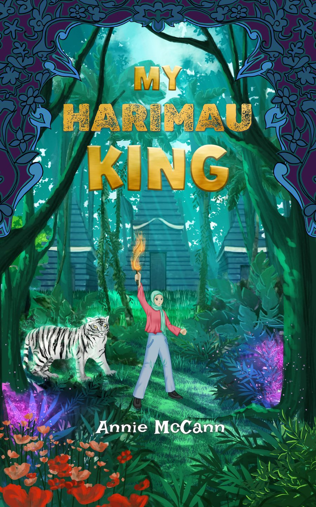

My HarimauKing
Annie McCann
Parramatta. Sumaiyah Jackson is 13 and living her best life, until loved ones begin to disappear.
Pajajaran, Indonesia. An ancient king, a modern-day kid, and a life-changing prophecy that binds them.

The book
13-year-old Sumaiyah Jackson is living her best life in Parramatta until a family drama spirals out of control, mysterious events start happening, and loved ones begin to disappear.
Suddenly, Sumaiyah and her friends find themselves trapped in the ancient kingdom of Pajajaran, Indonesia, where Sumaiyah discovers she is ‘the chosen one’ from descendants of ancient royalty.
- Middle grade fantasy
- Melby Rose Publishing
- 293 pages
“A truly unique and enthralling world, rendered in exquisite detail so that the non-stop action and evocative characters leap off the page.”Wai Chim
“A fresh new fantasy with fascinating insights into West Javanese culture and history.”Leanne Yong
Two worlds
Parramatta
Where Sumaiyah lives and goes to school, and where the story starts.
Pajajaran
The ancient kingdom where Sumaiyah and her friends end up trapped, and where legends like the harimau come to life.
Some Sundanese and Indonesian phrases are left untranslated, so you learn them from the story, and a glossary at the back explains the historical and cultural words.
Annie McCann
“You can’t be what you can’t see.”
Annie is an Indonesian Australian Muslim author and emcee. She grew up loving fantasy drawn from myths and legends around the world, but never found one built on Indonesian mythology. So she wrote it, checking the history with family who knew it.
It began as a short story, became a novella, then a novel. In her words, “I actually had a book in me all this time.”
She started the readers’ network Read3r’z Re-Vu in 2009, co-founded The Right Pen Collective for Australian Muslim writers, and hosted the Garth Nix and Jay Kristoff spotlight panel at Book Fair Australia 2026.
- Rolling Gunung Tampomas, in The Mythic Circle
- Tale of a Cursed Mountain, in Journals of Love and Literature
- Twisted Elegance of the Deep Green Sea, in This Fresh Hell
Schools and events
Annie visits schools and hosts author events as an emcee. To ask about a visit or a panel, message her on Instagram.
@nenganniemenulis